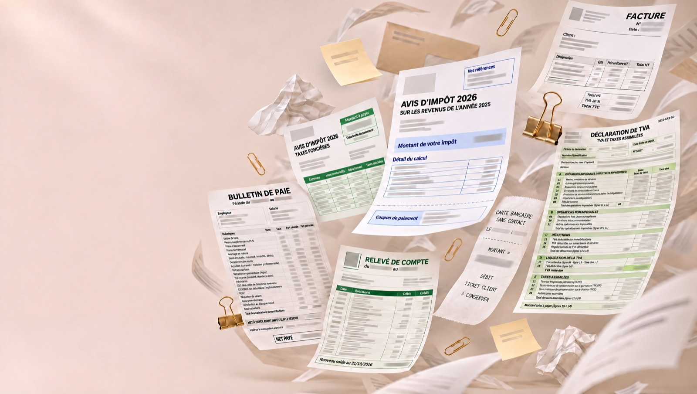

Comptabilité & bilans
Suivi comptable quotidien, révision et établissement des bilans, avec un point trimestriel personnalisé.

Expert-comptable des TPE & PME · Paris 8e
Vous nous confiez le désordre de l'année. On en fait un bilan clair.
Expertises
Suivi comptable quotidien, révision et établissement des bilans, avec un point trimestriel personnalisé.
Audit financier, légal et contractuel pour sécuriser vos décisions stratégiques.
Accompagnement juridique et financier de A à Z pour lancer votre activité sereinement.
Gestion de la paie et services sociaux encadrés pour vos équipes.
Conseil juridique continu et accompagnement des start-ups dans leurs levées de fonds.
Vos questions, nos réponses
Chaque question posée sur notre Instagram devient ici une réponse complète, avec les références utiles.
Souvent un simple oubli de déclaration. Comment corriger et contester l'avis.
Lire la réponse → Notes de frais · EntrepreneursQui est concerné, à quelles conditions, et le calcul 2026 : 15,90 € maximum par repas.
Lire la réponse → TVA · Chefs d'entrepriseNon. Le bon papier à garder, et la règle des 150 € HT.
Lire la réponse →Équipe
Contact